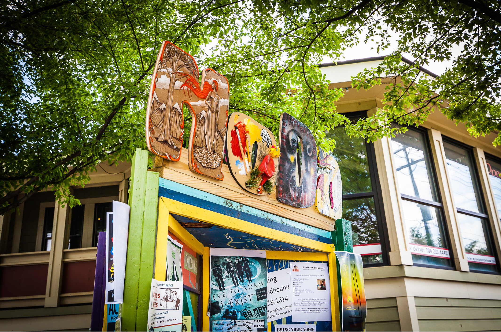
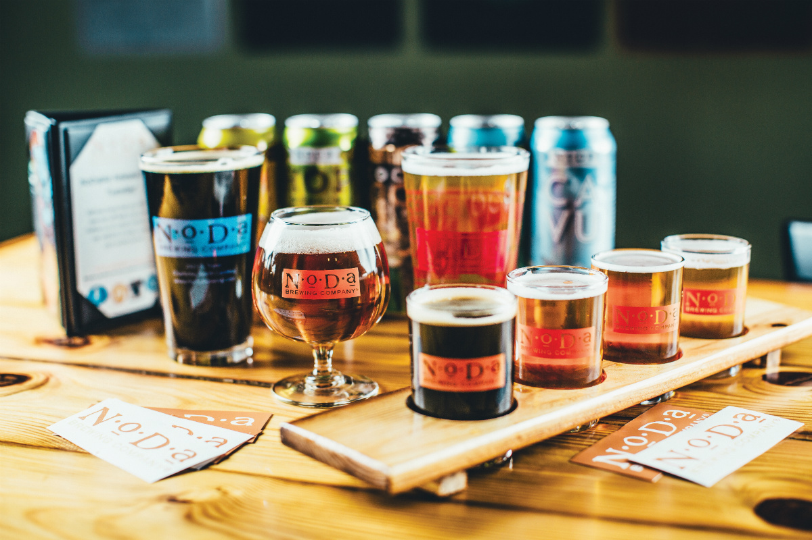
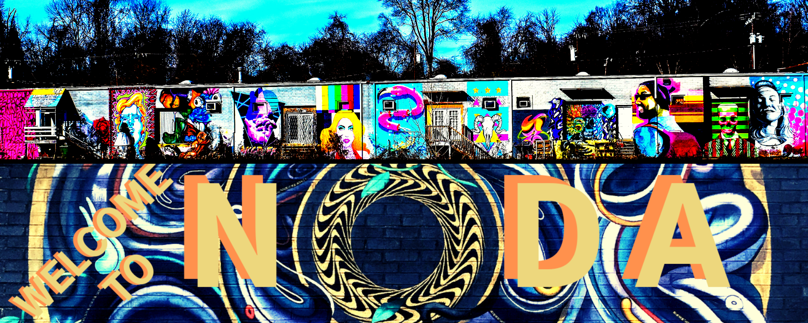
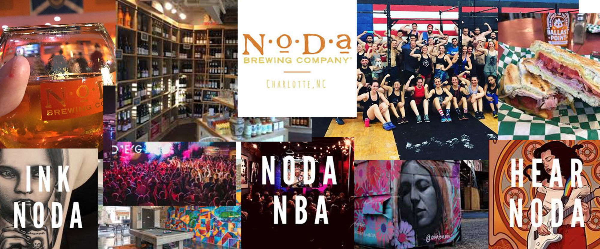

About

NoDa is Charlotte’s historic arts and entertainment district. NoDa is home to all walks of life and an array of talented artists and musicians. Whether you are looking for Craft beer, award-winning food, custom gifts, or tattoos you’ll find what you need in NoDa.
Above all, the residents of NoDa are dedicated to promoting the arts, living eco-friendly lifestyles, and small businesses. The NoDa Neighborhood and Business Association is focused on encouraging diversity and promoting culturally enriching events for the neighborhood.
LEARN MORE ABOUT NoDa Here
Beer

Famous NoDa Beers
- Hop, Drop ‘n Roll™ (IPA)
- Jam Session™(PALE ALE)
- Woody & Wilcox’s Hop Experiment (SEASONAL ALE)
- Ramble on Red™ (RED ALE)
- Coco Loco™ (PORTER)
- CAVU™ (BLONDE ALE)
- Par 4™ (IPA)
- NoDajito™ (WITBEIR)
- NoDaRyeZ’d™ (DOUBLE RYE IPA)
- Gordgeous™ (PUMPKIN ALE)
The Breweries
- NoDa Brewing Company
- Bold Missy Brewery
- Divine Barrel Brewing
- Free Range Brewing
- Birdsong Brewing Co.
- Salud Cerveceria
- Heist Brewery and Barrel Arts
LEARN MORE ABOUT NoDa Here
Art

Enter a phone booth on the corner, knock three times on the wall and the phone will ring. Pick it up and whisper the words “Arts District” and you will be shown the way…
Ok, finding your way through NoDa’s arts scene isn’t quite so dramatic as a secret speakeasy, but some find it a little more challenging than it used to be. The area, formerly part of North Charlotte, has been historically known for its arts scene and local galleries, but many of the galleries have closed over the years. In fact, some in the Queen City question whether NoDa is still the Arts District at all.
We’re here to tell you it most definitely is — you just have to know where to look.
Before we talk about why NoDa is still the Arts District, we have to define the boundaries of NoDa itself. Lauren Schalburg of the NoDa Neighborhood and Business Association said according to the group’s bylaws, NoDa officially includes everything inside of the following main roads: Tryon Street, Sugar Creek Road, The Plaza and Matheson Avenue.
Many of the galleries in NoDa have closed over the years, but that doesn’t mean the local arts scene isn’t thriving. In addition to markets, monthly gallery crawls and regular street vendors, NoDa still has art everywhere you look (the Johnston YMCA even has an art studio inside of it).
NoDa still still stands as the market for art retail as much as ever. NoDa business owners are pairing concepts now: shop for art while you eat lunch, play pool or listen to music. Join us as we explore some of those establishments.
LEARN MORE ABOUT NoDa Here
Activities

NoDa is gaining a reputation for great food, but that's not all that's there—with three tattoo parlors, two coffee shops, multiple funky small stores and two music venues along a five-block stretch, NoDa maintains the creative vibe that makes it a true gem in the city's crown.
If you're not into that, there are also plenty of Art galleries to lay your eyes on and fitness places for you to stay active. Both NoDa Yoga and Crossfit have been huge booms!
LEARN MORE ABOUT NoDa Here